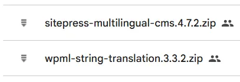

üåçImplementar WPML en WordPress
Documentación para instalar, configurar y utilizar WPML para crear sitios WordPress multilingües de manera profesional.
¬øQu√© es WPML? ü§î
WPML (WordPress Multilingual Plugin) es un plugin premium que permite traducir tu sitio WordPress a múltiples idiomas, facilitando tanto traducciones manuales como automáticas con herramientas avanzadas como DeepL y gestión de equipos de traducción.
¡Ideal para sitios que quieren llegar a todo el mundo! üåê
Instalaci√≥n de WPML üõ†Ô∏è
1. Descarga del Plugin
WPML es de pago, se compró en su momento, así que usaremos esos archivos.
Accederemos a la carpeta de Drive de 7. Herramientas.
Y descargamos los archivos

2. Instalación en WordPress
- Ve a Plugins > Añadir nuevo.
- Haz clic en Subir plugin ⬆️.
- Selecciona el archivo ZIP y haz clic en Instalar ahora.
- Repite para los módulos adicionales.
- Actívalos desde Plugins instalados ✅.
Consejo
El único archivo esencial para instalar WPML es el de “sitepress-multilingual-cms.4.7.2”. El resto es opcional, aunque puede ayudar mucho instalar los otros Plugins.
Configuración Inicial ⚙️
Al activar WPML, se abre un asistente dividido en varias fases:
Selecci√≥n de Idiomas üó£Ô∏è
- Elige el idioma principal de tu sitio.
- Añade los idiomas a los que deseas traducir tu web (autocompletado disponible).
Formato de URL Multiling√ºe üîó
Define cómo se mostrarán las URLs por idioma:
| Opción | Ejemplo | Recomendación |
|---|---|---|
| Directorios por idioma üìÅ | /es/, /en/, /de/ | Más recomendado üëç |
| Subdominios üåê | es.tusitio.com | Opcional |
| Dominio diferente por idioma üåç | tusitio.es, tusitio.de | Para proyectos grandes |
Consejo
Usar directorios facilita la gestión y el SEO multilingüe.
Registro y Activaci√≥n de WPML üîë
- Ingresa la clave de tu sitio, obtenida en tu cuenta WPML (Pedirsela a Marco).
- Sin clave, no podrás usar el plugin ni recibir actualizaciones.
Asignaci√≥n de Traductores üë•
- Decide quién gestionará las traducciones:
- Solo tú (Admin)
- Otros usuarios del sitio (puedes asignar pares de idiomas)
- Servicio de traducción profesional externo
Opciones de Soporte y Complementos üß©
- Puedes optar por enviar información sobre tus plugins y tema activo a WPML para recibir soporte y alertas de compatibilidad más rápido.
- WPML detectará plugins compatibles (ej. Yoast SEO) y sugerirá instalar complementos específicos. Lo instalaremos.
Finalizaci√≥n üéâ
- Haz clic en Ir al Panel de Traducción para terminar la configuración inicial.
Primeros Pasos Tras la Configuraci√≥n üö¶
Gesti√≥n de Idiomas üåè
- Cambia el idioma principal o añade/elimina idiomas desde WPML > Idiomas.
- Personaliza las banderas üè≥Ô∏è y el orden de los idiomas.
- Configura los "switchers" (interruptores) de idioma en menús, footers, widgets, etc.
Formato de URL y Banderas üö©
- Ajusta el formato de URL y elige el estilo de las banderas que representan cada idioma.
Switchers de Idiomas üîÑ
- Añade interruptores de idiomas en menús de navegación, pies de página, enlaces, etc., según las necesidades del proyecto.
Realizar Traducciones con WPML ✍️
1. Traducci√≥n de Páginas y Entradas üìÑ
- Ve a Páginas > Todas las páginas.
- Verás nuevas columnas para cada idioma.
- Haz clic en el icono correspondiente para traducir:
- ➕ (Más): Si la página NO tiene traducciones.
- ⚙️ (Engranaje): Si la página está siendo modificada.
- ✏️ (Lápiz): Si la página ya está traducida.
- üîÑ (Actualizar): Si hay cambios pendientes en la traducci√≥n.
2. Uso del Editor de Traducci√≥n üìù
- El editor muestra el texto original a la izquierda y el campo de traducción a la derecha.
- Puedes usar traducci√≥n automática ü§ñ (consume cr√©ditos) o traducir manualmente.
- Atajos útiles:
- Ctrl + Enter: Guardar traducci√≥n üíæ.
- Alt + número: Aplicar formato especial (negrita, subrayado, etc.) en la traducción.
3. Progreso y Finalizaci√≥n üìä
- Una barra de progreso indica el avance de la traducción.
- El botón Finalizado solo estará disponible al completar el 100% de la traducción.